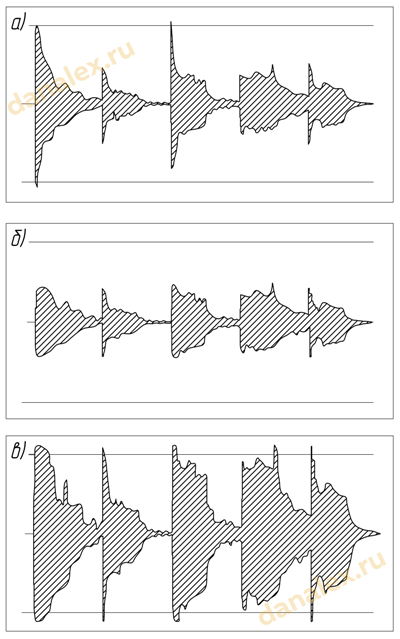
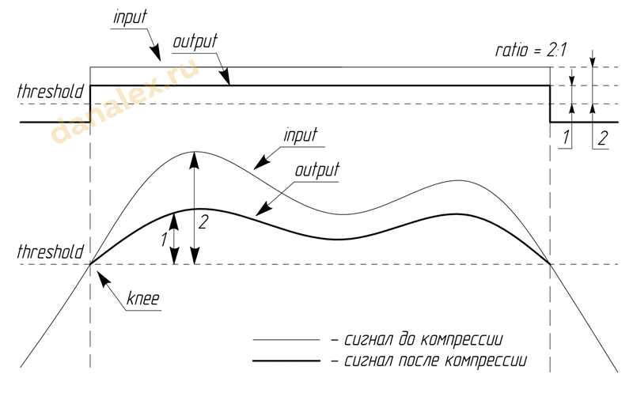
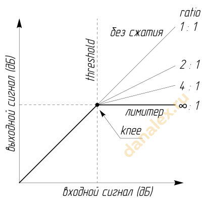
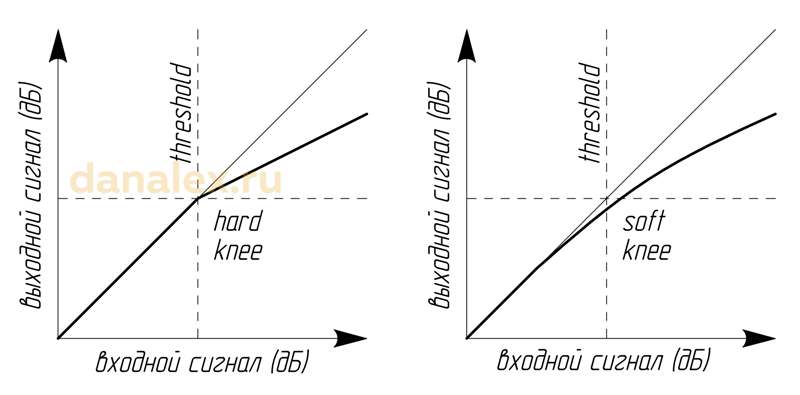
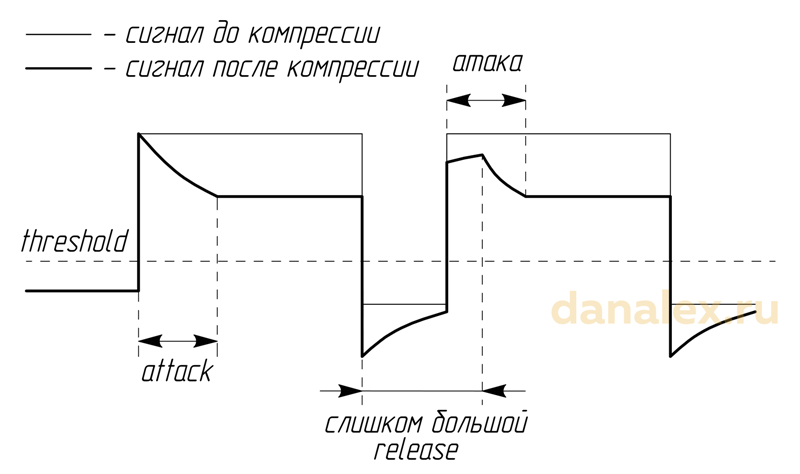

Понятие громкости близко и понятно не только музыканту, но и людям, не связанным с музыкой. Соотношение громкости частей произведения и громкостей одновременно звучащих инструментов мы называем динамическим диапазоном. Один из главных инструментов, который продюсеры и музыканты используют для воздействия на динамический диапазон, — это компрессор.
Несмотря на то, что компрессор работает с известным всех явлением — громкостью — в большинстве случаев его использование происходит стихийно, наугад, без понимания сути происходящего. Можно знать общий принцип работы компрессора и назначение каждой ручки, но это не избавляет от ступора при первом опыте.
Основное назначение компрессора — автоматическое изменение уровня сигнала. Его работа примерно похожа на то, как если бы вы постоянно держали руку на фейдере громкости, то поднимая, то опуская ее. Отличие в том, что компрессор может очень быстро реагировать на изменения, гораздо быстрее и точнее, чем человек.
До этого момента под словом компрессор подразумевался целый класс динамических приборов. На тех же основным принципах, что и обычный компрессор, работают различные инструменты для разных задач: лимитеры, экспандеры, гейты и т.д. Их объединяет работа с громкостями отдельных звуков или микса в целом.
Классический компрессор вызывает противоречия самим своим названием. Все знают, что он делает звук громче. Но при этом название происходит от compress, что означает «сжатие», и если спросить у любого звукорежиссера, что делает компрессор, услышите ответ — «давит сигнал». Компрессор уменьшает амплитуду динамических всплесков, делает их тише. Так в чем же все-таки главный смысл компрессора — делать тише или делать громче? Ответ — и то, и другое одновременно.
Рассмотрим на примере записи вокала. Чаще всего в процессе пения звучат разные по громкости слоги или звуки. Если певец не очень хорошо контролирует динамику своего исполнения, то такие перепады создают проблемы звукорежиссеру и негативно отражаются на финальном результате работы. Тихие слоги исчезают в миксе, текст становится плохо различимым, а если настроить громкость по тихому участку, то в других местах голос начинает «торчать».

Здесь на помощь приходит компрессор. Он позволяет подавить громкие всплески, уравнять их с тихими кусками. Теперь можно поднять громкость дорожки, не боясь выпирания некоторых слогов. Таким образом, компрессор одновременно делает звук и тише, и громче. На трех изображениях показаны стадии работы со звуком: исходник с большими пиками (а), компрессированный сигнал (б) и подъем уровня громкости всего файла (в).
Особенно важно применять компрессию при записи в цифровую среду, когда мы вынуждены придерживаться максимального уровня в 0 дБ, ведь превышение этого порога приводит к клипам и искажениям. При появлении клипов мы понижаем уровень предусилителя, а значит уменьшаем громкость не только всплесков, но и тихих участков, что приводит к деградации сигнала из-за шумов квантования и алиасинга.
Компрессор, помещенный между предусилителем и цифровой системой записи, срабатывает лишь на самых громких всплесках, уменьшая их громкость и обеспечивая ровное звучание дорожки. Благодаря этому мы получаем возможность не уменьшать общую громкость записываемого сигнала и сохраняем качество звука.
К сожалению, многие современные музыканты, не вдаваясь в технические особенности компрессора, применяют его повсюду, считая, что с его помощью можно «вытянуть» любой звук в миксе. Причем нередко компрессоры включаются в тракт в экстремальных режимах. Опытные же звукорежиссеры используют их только тогда, когда есть реальная необходимость.
Компрессор помогает избежать проблем при записи. Чаще всего причиной проблем может быть следующее:
Если исполнитель владеет голосом и умеет петь в микрофон, а инженер звукозаписи отлично знает свое дело и знает, как правильно расставить микрофоны и настроить оборудование, то компрессор может вообще не потребоваться. Но это идеальная ситуация. Поэтому уметь пользоваться компрессорами нужно, но верх мастерства — это уметь ими НЕ пользоваться.
Овладев технологией компрессии, помните: лучший звук — тот, которому компрессор не требуется. Чаще всего последующая компрессия, как и эквализация, — это устранение недостатков. Если не допускать появления проблемных мест, то и устранять будет нечего.
Компрессоры бывают с автоматическим и ручным режимом работы. Плюс автоматических компрессоров в том, что вам не нужно вникать в непонятные названия ручек. Но автоматы обычно хорошо подходят только для какой-то определенной задачи, а в иных случаях они проявляют себя не очень хорошо.
Поэтому предпочтительнее овладеть принципами работы с компрессором, чтобы держать все процессы под контролем. Первый шаг — изучение параметров ручного компрессора. Кстати, некоторые приборы могут переключаться между режимами автоматической (Auto) и ручной компрессии (Manual).
Полный перечень параметров компрессии включает:
На некоторых компрессорах могут отсутствовать ручки для управления какими-то из этих параметров.
Input Gain — входная чувствительность, регулирует уровень входящего сигнала. Если этот параметр не регулируется, то уровень на входе можно корректировать, изменяя выходную громкость предыдущего устройства в цепи.
Threshold — порог срабатывания. Компрессия срабатывает только тогда, когда сигнал становится достаточно громким (достигает заданного порога). Как только сигнал опускается ниже Threshold — она прекращается.

Первые два параметра напрямую связаны друг с другом. Понижая уровень входящего сигнала, мы изменяем его соотношение с порогом срабатывания. В результате порога достигает меньшее количество всплесков. Аналогичного эффекта можно добиться, повысив Threshold.
Громкость отсчитывается вниз от 0 дБ, поэтому ручка Threshold имеет отрицательные значения, то есть порог -30дБ обеспечит компрессию для большего количество участков волны, чем -27 дБ. При значении -30 дБ компрессор будет срабатывать чаще, потому что в его рабочий диапазон будет попадать больше пиков.
На практике в большинстве случаев значение Threshold варьируется между -15 и -30 дБ.

Ratio — коэффициент сжатия. Чем он выше, тем сильнее компрессор давит сигнал, превышающий порог срабатывания. Этот параметр выражается дробью и показывает, в какой пропорции происходит сжатие. Например, при Ratio 2:1 компрессор сожмет в два раза часть сигнала, превышающую порог.
Пример. Установим коэффициент сжатия на 2:1, а порог срабатывания на -20 дБ. Если при таких настройках входящий сигнал будет -18 дБ (на 2 дБ громче порога срабатывания), то превышение составит 2 дБ, и компрессор его понизит вдвое. Громкость на выходе будет -19 дБ (-20 + 2:2). Если на вход поступит сигнал на уровне -14 дБ (превышение на 6 дБ), компрессор уменьшит его на 3 дБ до уровня -17 дБ (-20 + 6:2).
При Ratio 3:1 те же лишние 6 дБ сожмутся не вдвое, а втрое, и входной уровень -14 дБ превратится в -18 дБ (-20 + 6:3).
Разберитесь с Ratio внимательно. Он показывает соотношения сигналов относительно Threshold. Не нужно думать, что при значении коэффициента 2:1 входящий сигнал в -20 дБ превратится в -40 дБ! Для лучшего понимания на рисунке приведен график, на котором видно, как изменяется сигнал при разных значениях Ratio.
При Ratio 1:1, компрессии не будет, сигнал просто пройдет сквозь компрессор.
Обычные значения степени сжатия при работе с компрессором — примерно от 2:1 до 5:1. При этом 2:1 — это слабая компрессия, которую можно и не заметить, а 5:1 — это уже довольно сильное сжатие, не всегда музыкальное. Чтобы не ошибиться — для начала используйте умеренные значения между 3:1 и 4:1, они с меньшей вероятностью навредят исходному сигналу.

Knee — это так называемое «колено» компрессии, показывающее, насколько резко или плавно будет изменяться график волны в процессе компрессирования.
К примеру, уже упоминавшиеся клипы в цифровой среде можно условно назвать очень резкой компрессией с максимально жестким «коленом» и степенью сжатия, равной бесконечности (компрессия с такой степенью сжатия называется лимитированием). Любое превышение нуля децибел даст гладкий плоский клип.
Регулируя параметр Knee, мы можем менять плавность перехода в графике волны в момент срабатывания компрессора. Жесткая компрессия (Hard Knee) прорисовывается с явным резким перегибом графика, а при мягкой компрессии (Soft Knee) переход будет плавным, закругленным.
Не все компрессоры позволяют изменять значение Knee. Для большинства железных устройств колено является индивидуальной конструктивной особенностью.
Attack — атака, один из элементов любых огибающих. Это скорость срабатывания компрессора, то есть время, за которое компрессия достигнет заданной степени сжатия. Чем меньше время атаки, тем быстрее произойдет подавление громкого всплеска.
Важно понять, что прибавляя атаку (время), вы ее замедляете. Некоторые компрессоры, впрочем, устроены по обратному принципу. Регулятор атаки показывает не время, а отношение к времени: чем больше атака, тем быстрее действие. За подробностями лучше обратиться к инструкции выбранной модели.
Может возникнуть вопрос — а зачем нужна атака, почему бы не компрессировать сигнал сразу? В умелых руках компрессор — это не только прибор для уменьшения динамического диапазона записи, это музыкальный инструмент. Грамотно используя его возможности, можно получить интересные результаты. Иногда для придания хлесткости некоторым звукам необходимо сжать только их основное тело, оставив первые мгновения звучания нетронутыми. Увеличение времени срабатывания компрессора замедляет его действие, и он «пропускает» атаку сигнала в ее изначальном виде. Звук становится резче, приобретает «щелчок». Это полезно для придания звонкости «ватной» перкуссии. Иногда с помощью такого приема удается существенно улучшить звучание бочки или малого барабана.
Не переборщите с атакой. Пропуская слишком много сигнала мимо компрессии, вы можете сделать ее бесполезной, даже вредной. Громкие всплески будут пролезать в микс, не позволяя прибавлять уровень сигнала.
Слушайте результат, следите за индикацией компрессора и пульта и иногда нажимайте Bypass для сравнения с исходным звуком.
Release — спад компрессии. Компрессор должен определенным образом начать и закончить свое воздействие, и завершение действие называется спадом. Чем больше время спада, тем дольше удерживается компрессия после возвращения сигнала на уровень ниже Threshold.

Будьте внимательны, при слишком большом значении спада компрессор может не успеть вернуться в исходное состояние до наступления следующего «всплеска». Особенно осторожным нужно быть при компрессии бочки (см. рисунок): неверный релиз может дать щелчки в звуке.
Output Gain — выходная чувствительность, обычно она обозначается просто Gain. Если порог срабатывания и степень сжатия настроены правильно, то у вас появился запас громкости. Добавляйте выходную чувствительность до нужного уровня, не допуская перегруза и появления клипов.
Способы и правила подключения компрессоров, лимитеров и прочих приборов динамической обработки к рабочей среде, как выясняется, для многих также, мягко говоря, не вполне очевидны. Останавливаться на этом моменте смысла нет, поскольку ему недавно была посвящена отдельная статья — Обработка звука: подключение через AUX или INSERT.
В ней вы сможете найти информацию не только по подключению железных процессоров к физическим входам и выходам системы записи или микшерной консоли, но и по правильной маршрутизации сигнала в цифровой среде внутри DAW.
Сравнивая сигналы без компрессора и с компрессором, вы услышите, что компрессированный сигнал заметно громче, несмотря на то, что на индикаторах уровня пики находятся на тех же значениях. Это и есть основная задача компрессии — при сохранении тех же значений пиков на индикаторах сделать сигнал громче. Она сокращает разницу между самыми тихими и самыми громкими моментами звучания, то есть уменьшает динамический диапазон.
Не забывайте, что динамический диапазон дает звуку дыхание. Ищите баланс, не усердствуйте с компрессией. Чрезмерная компрессия, как и клипы, может привести к деградации сигнала, потере музыкальности, искажениям. Сдавленный звук не только создаст сложности при сведении, но и подсознательно будет негативно восприниматься слушателями.
Учитывайте при работе с компрессором характер обрабатываемого инструмента. Живые инструменты (рояль, бас-гитара, гитара и даже бочка) при слабом взятии музыкантом ноты не просто звучат тише, они меняют тембр. Выравнивая их по громкости, вы рискуете получить неоднородное звучание партии. Тогда от компрессора будет больше вреда, чем пользы. Если музыкант специально извлекает звуки с разной динамикой, звукоинженер не имеет права портить замысел компрессией. Если нет возможности записать различные по динамике куски раздельно, лучше быть максимально осторожным с настройками. Но если разница в звукоизвлечении является следствием низкой квалификации музыканта, то, конечно, придется выбирать меньшее из зол и «утюжить» партию компрессором, несмотря на тембральные перепады.
Не забывайте про режим Bypass, чтобы сравнить сигналы с компрессией и без нее. Внимательно слушайте, действительно ли компрессия дает положительный эффект? И вообще, есть ли от нее эффект? Иногда после длительного кручения ручек звук не только не прибавляет в громкости, но и наоборот — становится тише! Это означает, что вы что-то напутали в настройках. Компрессор можно и нужно применять только тогда, когда от него есть очевидная польза.
Если ваша профессиональная деятельность или хобби связаны со звуком, то не забывайте заглядывать в этот блог, здесь вы найдете немало полезных статей на эти темы. Через некоторое время я опубликую еще пару материалов, посвященных работе с компрессорами и другими приборами динамической обработки. Чтобы не пропустить их появление — подпишитесь на обновления, это совершенно бесплатно.
Ну а если вы не желаете ждать и хотите получить комплексную и подробную информацию об аранжировке, сведении, студийной звукозаписи и создании музыки — возможно, вас заинтересует моя книга «Академия Мюзикмейкера», которую можно приобрести по этой ссылке с доставкой по РФ и по всему миру. В частности, эта статья — переработка отрывка книги, а в самой книге вы также найдете практические рекомендации по настройкам компрессоров для различных ситуаций и творческих задач.
* * *
По-сути, весь вышеприведенный текст - это глава из книги Академия мюзикмейкера Алексея Данилова. Книга продается автором за 900 руб (цена на 2021 г.). Описание и содержание данной книги здесь.